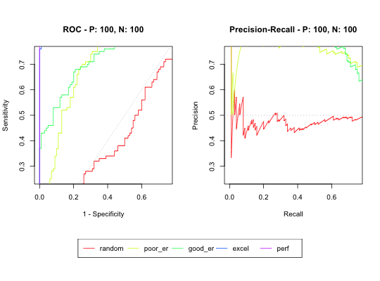
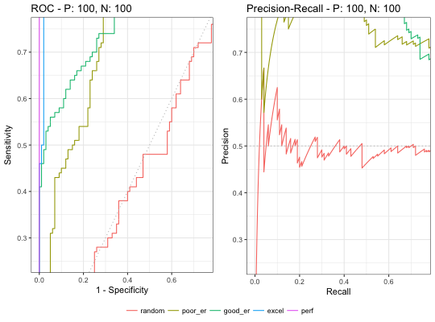
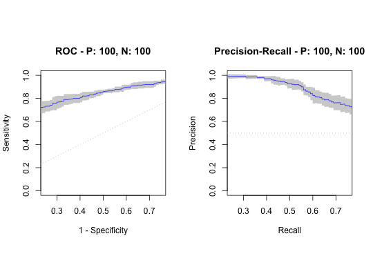
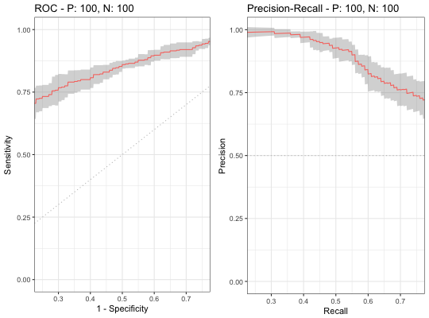
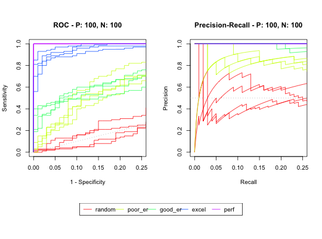
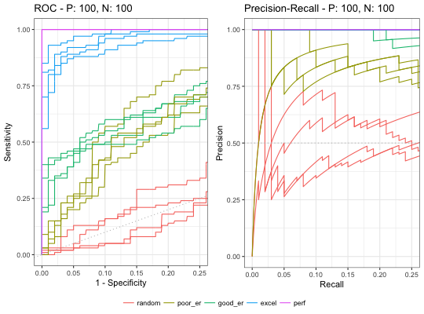

Calculate partial AUCs
The part function takes an S3 object generated by
evalmod and calculate partial AUCs and Standardized partial
AUCs of ROC and Precision-Recall curves.
Standardized pAUCs are standardized to the range between 0 and 1.
part(curves, xlim, ylim, curvetype) # S3 method for sscurves part(curves, xlim = c(0, 1), ylim = c(0, 1), curvetype = c("ROC", "PRC")) # S3 method for mscurves part(curves, xlim = c(0, 1), ylim = c(0, 1), curvetype = c("ROC", "PRC")) # S3 method for smcurves part(curves, xlim = c(0, 1), ylim = c(0, 1), curvetype = c("ROC", "PRC")) # S3 method for mmcurves part(curves, xlim = c(0, 1), ylim = c(0, 1), curvetype = c("ROC", "PRC"))
Arguments
| curves | An
See the Value section of |
|||||||||||||||
|---|---|---|---|---|---|---|---|---|---|---|---|---|---|---|---|---|
| xlim | A numeric vector of length two to specify x range between two points in [0, 1] |
|||||||||||||||
| ylim | A numeric vector of length two to specify y range between two points in [0, 1] |
|||||||||||||||
| curvetype | A character vector with the following curve types.
Multiple |
Value
The part function returns the same S3 object specified as
input with calculated pAUCs and standardized pAUCs.
See also
evalmod for generating S3 objects with
performance evaluation measures. pauc for retrieving a dataset
of pAUCs.
Examples
## Load library library(ggplot2) ################################################## ### Single model & single test dataset ### ## Load a dataset with 10 positives and 10 negatives data(P10N10) ## Generate an sscurve object that contains ROC and Precision-Recall curves sscurves <- evalmod(scores = P10N10$scores, labels = P10N10$labels) ## Calculate partial AUCs sscurves.part <- part(sscurves, xlim = c(0.25, 0.75)) ## Show AUCs sscurves.part#> #> === AUCs === #> #> Model name Dataset ID Curve type AUC #> 1 m1 1 ROC 0.7200000 #> 2 m1 1 PRC 0.7397716 #> #> #> === partial AUCs === #> #> Model name Dataset ID Curve type pAUC Standardized #> 1 m1 1 ROC 0.3771875 0.7543750 #> 2 m1 1 PRC 0.3616708 0.7233417 #> #> #> === Input data === #> #> Model name Dataset ID # of negatives # of positives #> 1 m1 1 10 10 #>################################################## ### Multiple models & single test dataset ### ## Create sample datasets with 100 positives and 100 negatives samps <- create_sim_samples(1, 100, 100, "all") mdat <- mmdata(samps[["scores"]], samps[["labels"]], modnames = samps[["modnames"]]) ## Generate an mscurve object that contains ROC and Precision-Recall curves mscurves <- evalmod(mdat) ## Calculate partial AUCs mscurves.part <- part(mscurves, xlim = c(0, 0.75), ylim = c(0.25, 0.75)) ## Show AUCs mscurves.part#> #> === AUCs === #> #> Model name Dataset ID Curve type AUC #> 1 random 1 ROC 0.4682000 #> 2 random 1 PRC 0.4879493 #> 3 poor_er 1 ROC 0.8203000 #> 4 poor_er 1 PRC 0.7926130 #> 5 good_er 1 ROC 0.8005000 #> 6 good_er 1 PRC 0.8239596 #> 7 excel 1 ROC 0.9636000 #> 8 excel 1 PRC 0.9685388 #> 9 perf 1 ROC 1.0000000 #> 10 perf 1 PRC 1.0000000 #> #> #> === partial AUCs === #> #> Model name Dataset ID Curve type pAUC Standardized #> 1 random 1 ROC 0.1039000 0.2770667 #> 2 random 1 PRC 0.1776306 0.4736816 #> 3 poor_er 1 ROC 0.3057000 0.8152000 #> 4 poor_er 1 PRC 0.3750000 1.0000000 #> 5 good_er 1 ROC 0.3162000 0.8432000 #> 6 good_er 1 PRC 0.3724424 0.9931797 #> 7 excel 1 ROC 0.3728000 0.9941333 #> 8 excel 1 PRC 0.3750000 1.0000000 #> 9 perf 1 ROC 0.3750000 1.0000000 #> 10 perf 1 PRC 0.3750000 1.0000000 #> #> #> === Input data === #> #> Model name Dataset ID # of negatives # of positives #> 1 random 1 100 100 #> 2 poor_er 1 100 100 #> 3 good_er 1 100 100 #> 4 excel 1 100 100 #> 5 perf 1 100 100 #>################################################## ### Single model & multiple test datasets ### ## Create sample datasets with 100 positives and 100 negatives samps <- create_sim_samples(4, 100, 100, "good_er") mdat <- mmdata(samps[["scores"]], samps[["labels"]], modnames = samps[["modnames"]], dsids = samps[["dsids"]]) ## Generate an smcurve object that contains ROC and Precision-Recall curves smcurves <- evalmod(mdat) ## Calculate partial AUCs smcurves.part <- part(smcurves, xlim = c(0.25, 0.75)) ## Show AUCs smcurves.part#> #> === AUCs === #> #> Model name Dataset ID Curve type AUC #> 1 good_er 1 ROC 0.7877000 #> 2 good_er 1 PRC 0.8305659 #> 3 good_er 2 ROC 0.8563000 #> 4 good_er 2 PRC 0.8793327 #> 5 good_er 3 ROC 0.8073000 #> 6 good_er 3 PRC 0.8551040 #> 7 good_er 4 ROC 0.8151000 #> 8 good_er 4 PRC 0.8472529 #> #> #> === partial AUCs (average curves only) === #> #> Model name Curve type pAUC Standardized #> 1 good_er ROC 0.4241050 0.8482100 #> 2 good_er PRC 0.4492477 0.8984954 #> #> #> === Input data === #> #> Model name Dataset ID # of negatives # of positives #> 1 good_er 1 100 100 #> 2 good_er 2 100 100 #> 3 good_er 3 100 100 #> 4 good_er 4 100 100 #>################################################## ### Multiple models & multiple test datasets ### ## Create sample datasets with 100 positives and 100 negatives samps <- create_sim_samples(4, 100, 100, "all") mdat <- mmdata(samps[["scores"]], samps[["labels"]], modnames = samps[["modnames"]], dsids = samps[["dsids"]]) ## Generate an mscurve object that contains ROC and Precision-Recall curves mmcurves <- evalmod(mdat, raw_curves = TRUE) ## Calculate partial AUCs mmcurves.part <- part(mmcurves, xlim = c(0, 0.25)) ## Show AUCs mmcurves.part#> #> === AUCs === #> #> Model name Dataset ID Curve type AUC #> 1 random 1 ROC 0.4421000 #> 2 random 1 PRC 0.4547515 #> 3 poor_er 1 ROC 0.8053000 #> 4 poor_er 1 PRC 0.7572025 #> 5 good_er 1 ROC 0.7747000 #> 6 good_er 1 PRC 0.8078172 #> 7 excel 1 ROC 0.9832000 #> 8 excel 1 PRC 0.9846063 #> 9 perf 1 ROC 1.0000000 #> 10 perf 1 PRC 1.0000000 #> 11 random 2 ROC 0.4645000 #> 12 random 2 PRC 0.4653600 #> 13 poor_er 2 ROC 0.8563000 #> 14 poor_er 2 PRC 0.8228244 #> 15 good_er 2 ROC 0.8083000 #> 16 good_er 2 PRC 0.8467044 #> 17 excel 2 ROC 0.9719000 #> 18 excel 2 PRC 0.9733195 #> 19 perf 2 ROC 1.0000000 #> 20 perf 2 PRC 1.0000000 #> 21 random 3 ROC 0.5948000 #> 22 random 3 PRC 0.5722346 #> 23 poor_er 3 ROC 0.8267000 #> 24 poor_er 3 PRC 0.7834741 #> 25 good_er 3 ROC 0.7913000 #> 26 good_er 3 PRC 0.8369510 #> 27 excel 3 ROC 0.9936000 #> 28 excel 3 PRC 0.9939414 #> 29 perf 3 ROC 1.0000000 #> 30 perf 3 PRC 1.0000000 #> 31 random 4 ROC 0.4604000 #> 32 random 4 PRC 0.5113985 #> 33 poor_er 4 ROC 0.8204000 #> 34 poor_er 4 PRC 0.7636494 #> 35 good_er 4 ROC 0.7511000 #> 36 good_er 4 PRC 0.7935750 #> 37 excel 4 ROC 0.9886000 #> 38 excel 4 PRC 0.9883373 #> 39 perf 4 ROC 1.0000000 #> 40 perf 4 PRC 1.0000000 #> #> #> === partial AUCs === #> #> Model name Dataset ID Curve type pAUC Standardized #> 1 random 1 ROC 0.01830000 0.0732000 #> 2 random 1 PRC 0.09641867 0.3856747 #> 3 poor_er 1 ROC 0.09670000 0.3868000 #> 4 poor_er 1 PRC 0.21049586 0.8419834 #> 5 good_er 1 ROC 0.12680000 0.5072000 #> 6 good_er 1 PRC 0.24624671 0.9849868 #> 7 excel 1 ROC 0.23410000 0.9364000 #> 8 excel 1 PRC 0.25000000 1.0000000 #> 9 perf 1 ROC 0.25000000 1.0000000 #> 10 perf 1 PRC 0.25000000 1.0000000 #> 11 random 2 ROC 0.02230000 0.0892000 #> 12 random 2 PRC 0.10359044 0.4143618 #> 13 poor_er 2 ROC 0.13430000 0.5372000 #> 14 poor_er 2 PRC 0.22656903 0.9062761 #> 15 good_er 2 ROC 0.14520000 0.5808000 #> 16 good_er 2 PRC 0.25000000 1.0000000 #> 17 excel 2 ROC 0.22370000 0.8948000 #> 18 excel 2 PRC 0.25000000 1.0000000 #> 19 perf 2 ROC 0.25000000 1.0000000 #> 20 perf 2 PRC 0.25000000 1.0000000 #> 21 random 3 ROC 0.04520000 0.1808000 #> 22 random 3 PRC 0.14748241 0.5899296 #> 23 poor_er 3 ROC 0.10990000 0.4396000 #> 24 poor_er 3 PRC 0.21696188 0.8678475 #> 25 good_er 3 ROC 0.14150000 0.5660000 #> 26 good_er 3 PRC 0.25000000 1.0000000 #> 27 excel 3 ROC 0.24360000 0.9744000 #> 28 excel 3 PRC 0.25000000 1.0000000 #> 29 perf 3 ROC 0.25000000 1.0000000 #> 30 perf 3 PRC 0.25000000 1.0000000 #> 31 random 4 ROC 0.04100000 0.1640000 #> 32 random 4 PRC 0.15880187 0.6352075 #> 33 poor_er 4 ROC 0.11100000 0.4440000 #> 34 poor_er 4 PRC 0.19842557 0.7937023 #> 35 good_er 4 ROC 0.11850000 0.4740000 #> 36 good_er 4 PRC 0.24832945 0.9933178 #> 37 excel 4 ROC 0.23860000 0.9544000 #> 38 excel 4 PRC 0.25000000 1.0000000 #> 39 perf 4 ROC 0.25000000 1.0000000 #> 40 perf 4 PRC 0.25000000 1.0000000 #> #> #> === Input data === #> #> Model name Dataset ID # of negatives # of positives #> 1 random 1 100 100 #> 2 poor_er 1 100 100 #> 3 good_er 1 100 100 #> 4 excel 1 100 100 #> 5 perf 1 100 100 #> 6 random 2 100 100 #> 7 poor_er 2 100 100 #> 8 good_er 2 100 100 #> 9 excel 2 100 100 #> 10 perf 2 100 100 #> 11 random 3 100 100 #> 12 poor_er 3 100 100 #> 13 good_er 3 100 100 #> 14 excel 3 100 100 #> 15 perf 3 100 100 #> 16 random 4 100 100 #> 17 poor_er 4 100 100 #> 18 good_er 4 100 100 #> 19 excel 4 100 100 #> 20 perf 4 100 100 #>